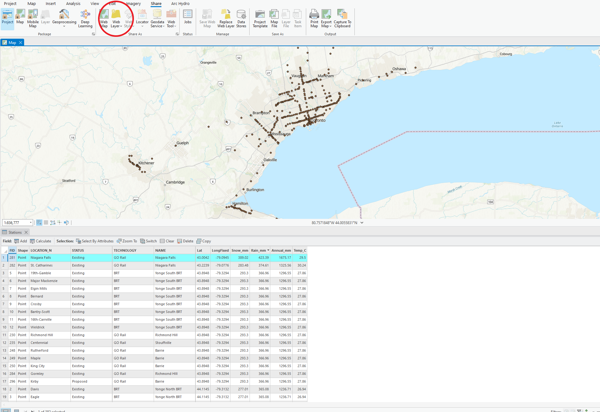
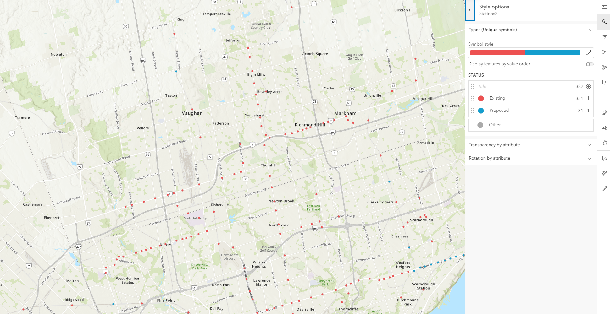
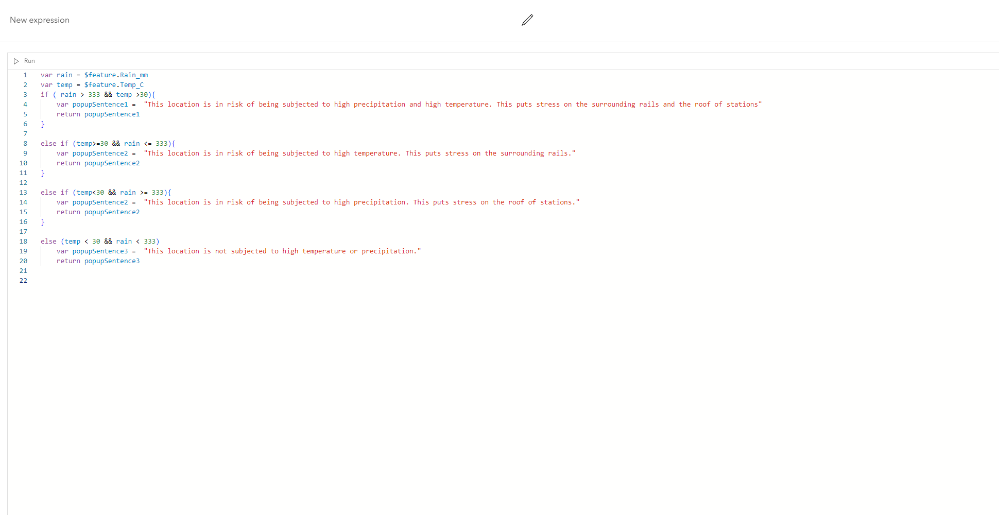

Creating a web map to deploy on ArcGIS Online products
From ArcGIS Pro to ArcGIS Online
Before creating AGOL products, it is necessary to create an appropriate web map. To achieve this, layers downloaded from Metrolinx and Ontario Climate Change Portal were imported into ArcGIS Pro and spatially joined. The resulting output was then shared as a feature layer on ArcGIS Online, where the process of configuring a web map commenced.
Symbolizing on ArcGIS Web Map Viewer
ArcGIS Web Map Viewer offers a variety of ways to symbolize the data at hand. For this project, we wanted to user to be able to distinguish between "Exisiting" and "Proposed" stations. These symbols will also be further explained by the interactive legend in our StoryMap. 
Configuring the popup
At first, the default popup was set as the field and their associated values. These values are not very helpful to the user without some context. We used Arcade within the popup configuration option in Web Map Viewer to make a popup that is more informative. It also summarizes some of the concerns that Metrolinx has outlined in their 2017 report. 
The final product and our thoughts
Overall, the utilization of ArcGIS Pro and ArcGIS Web Map Viewer proved to be effective in establishing a strong foundational map for our ArcGIS Online products. ArcGIS Pro's spatial analysis tool box allowed us to merge different feature classes together to create one robust feature layer that can be published on ArcGIS Online. The Web Map Viewer helped to make the final output to be more user friendly, as well as integrate some symbology.
Open Web Map